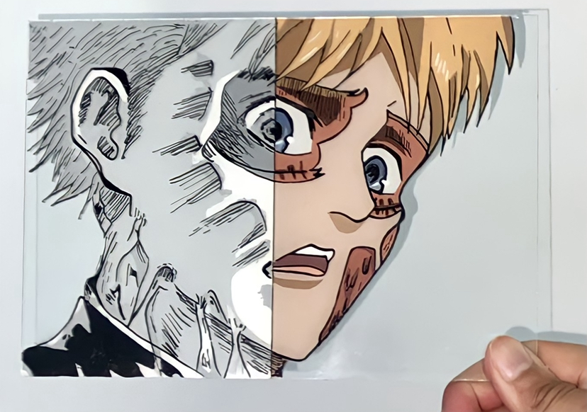
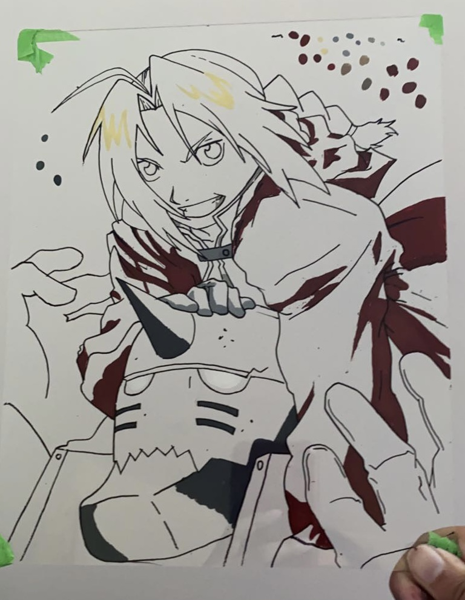
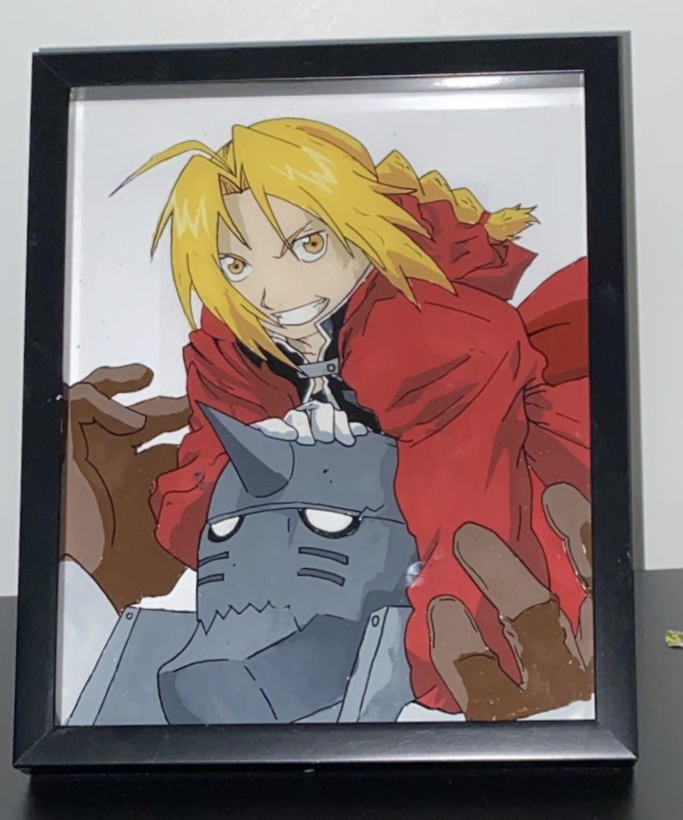

Art
I love to make art
Ever since I was a child, I've always loved to make art. Whether it was drawing on paper or painting, my hands were always busy creating a new piece of art. I don't get to paint and draw a lot often because of school, but I am hoping to improve my digital drawing skills over the summer!
Glass Painting
Last year, I decided to try out glass painting. The first time as an absolute fail. All the paint and outline smudged with each other creating a mess. I vowed never to glass paint again, only to find myself trying again the next day. Glass painting is a time consuming process and can create a beautiful result if done correctly. I am not perfect at glass painting, but I just like to have fun with it. Below are some examples of glass paintings I've done in the past, and I will be going through the steps of how you can create a glass painting too!
| Materials Needed: | I use: |
| Glass or Plexiglass | Any glass works! |
| Acrylic Paint | Folkart, Applebarrel (Any Acylic paint will work) |
| Sharpie or Paint Marker | Flymax 0.7mm Paint Pen |
| Paintbrushes | Bought from Micheals |
How to make a Glass Painting:
1. Outlining
- The first and most important step is flipping your reference image
- Next you need to outline (I like to draw the image out before outlining)
- I used a Flymax 0.7mm paint pen to outline the image above

2. Small details
- First paint the small details
- These can include the eyes, mouth, and shadows
- These are small and fine details so make sure you take your time
- Always dab your paint not stroke!!

3. Larger deatils
- This part is pretty easy!
- You need to fill in the rest of the painting
- These can inclide faces, clothing, and any other parts of the painting
- Make sure you contantly flip your glass to check for mistakes